This vignette provides more information about spatial grids in
admove. In particular, it demonstrates how to create
and modify spatial grids using the create_grid()
function.
Although the Kalman filter (KF) engine does not necessarily require a
grid AUTHOR_PAPER, it is good practice to define a spatial grid based on
the spatial extent of the tagging data. The grid is required by the
Continuous time Markov-chain (CTMC) engine and is used by both engines
for the spatial prediction of taxis, advection, diffusion and movement
rates and for visualisation. The create_grid() function
offers flexible functionality to define custom grids and to manually
include or exclude specific grid cells as needed.
The sf package is not a strict requirement of admove, but it provides a lot of really useful functionality when working with spatial information, such as spatial projections in admove.
The most simple grid
The most simple default grid can be created by using
create_grid() without arguments:
grid <- create_grid()This results in a unit grid with 100 cells:
summary(grid)
#> <admove_grid>
#> cells: 100
#> dims: 10 x 10
#> cellsize: 0.10 x 0.10
#> xrange: [0.00, 1.00]
#> yrange: [0.00, 1.00]
#> NAs: 0
#> units: not specifiedwhich we can easily visualise with:
plot(grid)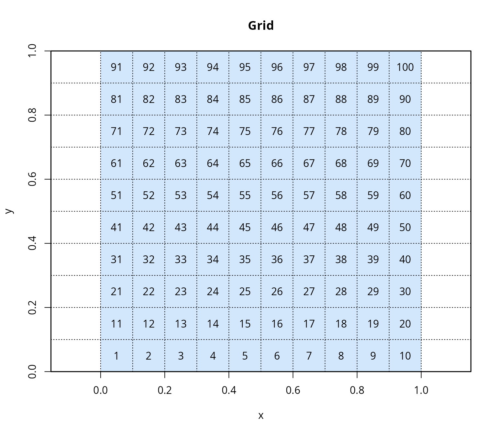
It is easy to change the cell size and make a coarser grid:
grid <- create_grid(grid, cellsize = 0.2, plot = TRUE)In a more realistic scenario, you might want to specify a grid in a specific region given some x and y ranges. These could be longitude / latitude ranges or correspond to any other units of a spatial projection.
grid <- create_grid(xrange = c(-150, -70),
yrange = c(-30, 35),
cellsize = 10,
plot = TRUE)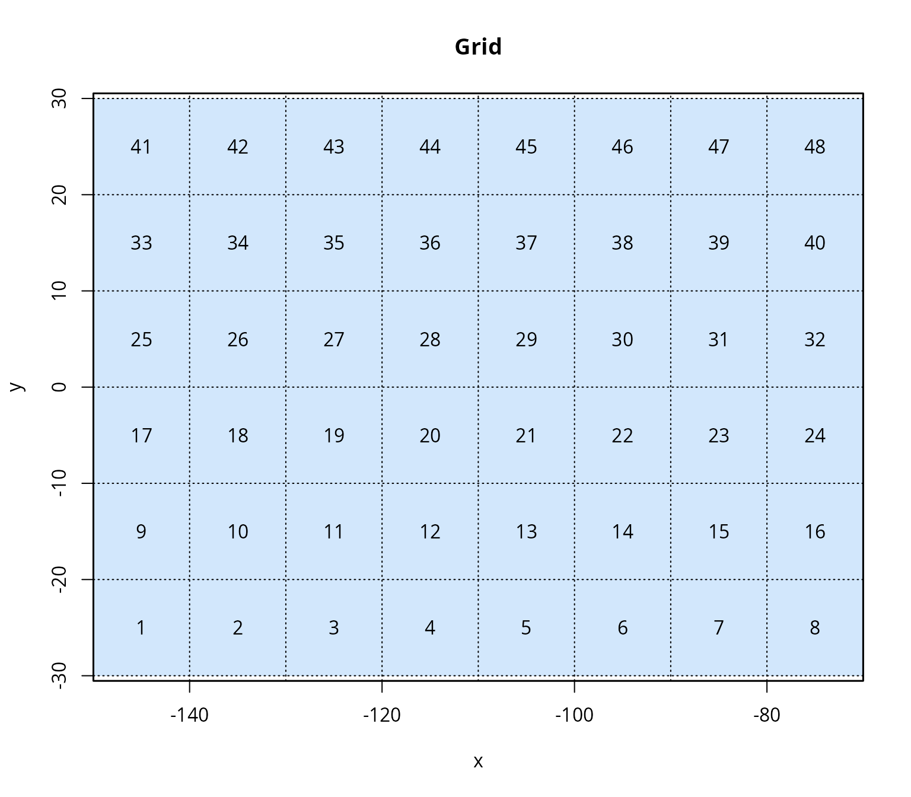
Note, that it is required to add spatial reference information
(sref) to define the coordinate reference system (CRS) and
units. Only then land masses can be plotted and the values of the
arguments xrange and yrange are defined. One
way to add the CRS is as an argument to the create_grid()
function directly:
grid <- create_grid(xrange = c(-15, 15),
yrange = c(30, 75),
cellsize = 5,
plot = TRUE,
crs = 4326,
plot_land = TRUE)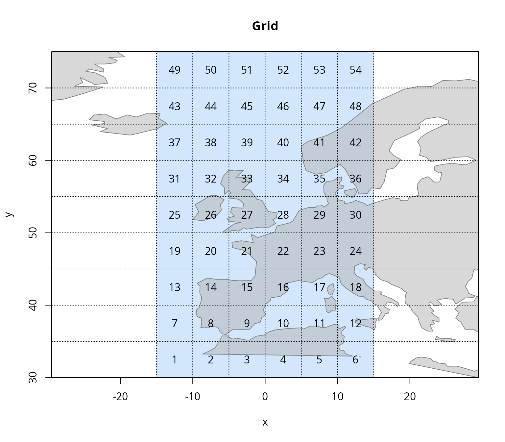
Here, we added the numeric code for the WGS 84 CRS in longitude/latitude and consequently the landmasses are shown in the plot. Another way to add the spatial reference information is after creating the grid:
## Land masses not plotted if spatial reference not defined
grid <- create_grid(xrange = c(-15, 15),
yrange = c(30, 75),
cellsize = 5,
plot = TRUE,
plot_land = TRUE)
## Add the spatial reference information
grid <- add_sref(grid, list(crs = 4326))
## Now the landmasses can be plotted
plot(grid, plot_land = TRUE)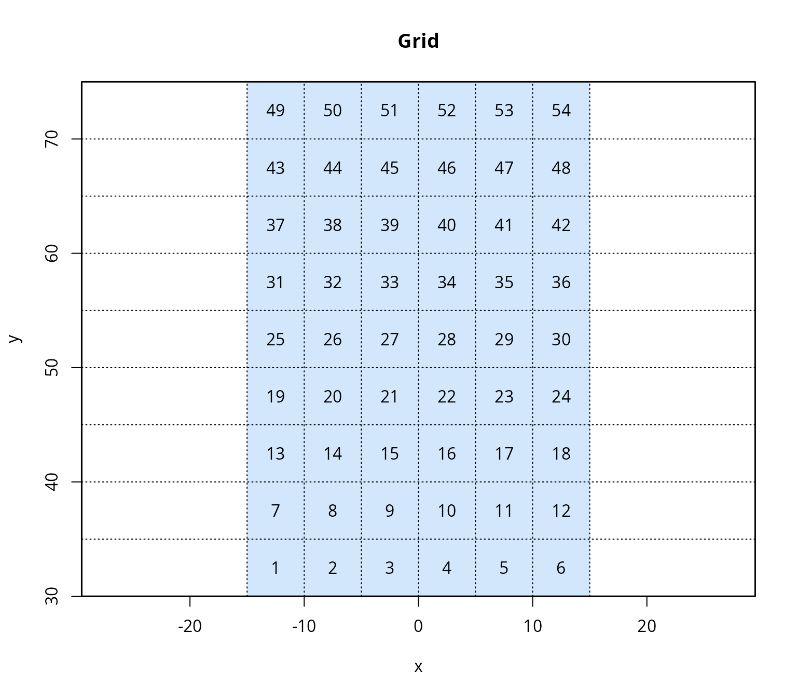

When working with spatial projected grids, it might be nice to change units. For example, the Albers projection
albers_crs <- sf::st_crs(3035)is in m by default, which can lead to large values:
grid <- create_grid(xrange = c(2000000, 5000000),
yrange = c(1500000, 5000000),
cellsize = 500000,
crs = albers_crs,
plot = TRUE,
plot_land = TRUE)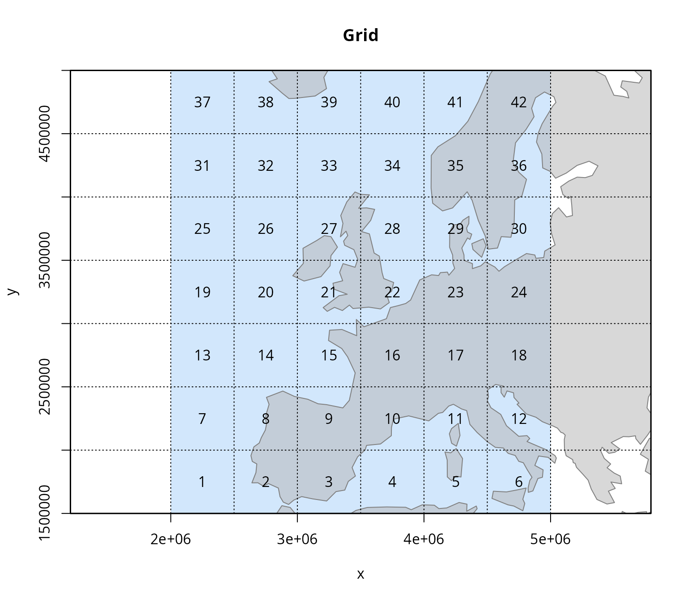
In this case, it might be nicer to work in km:
grid <- create_grid(xrange = c(2000000, 5000000),
yrange = c(1500000, 5000000),
cellsize = 500000,
crs = albers_crs,
units = "km",
plot = TRUE,
plot_land = TRUE)Or using an even smaller, custom scaling than m to km:
grid <- create_grid(xrange = c(2000000, 5000000),
yrange = c(1500000, 5000000),
cellsize = 500000,
crs = albers_crs,
crs_scale = 1e-6,
plot = TRUE,
plot_land = TRUE)Selecting grid cells
Another useful functionality of create_grid() is that it
allows to manually select all cells to be included in the grid by
setting select = 1. Any non-selected cell will be
NA and interpreted as a mask/boundary by
admove, i.e. excluded from the generator matrix.
grid <- create_grid(xrange = c(-150, -70),
yrange = c(-30, 35),
cellsize = 10,
select = 1,
crs = 4326,
plot_land = TRUE)Specifying the CRS and setting plot_land = TRUE can help
if the selection is based on land/water boundaries.
When working in large spatial domains or many hundreds of fine grid
cells it might seem tedious to select all cells. Therefore, it is also
possible to do the opposite and de-select individual cells with
select = 2.
grid <- create_grid(xrange = c(-150, -70),
yrange = c(-30, 35),
cellsize = 10,
select = 2,
crs = 4326,
plot_land = TRUE)Unfortunately, this interactive functionality cannot be well
demonstrated in a vignette. Moreover, this manual selection might be a
poor option in terms of reproducibility or automatic scripts. Therefore,
the argument select also accepts a vector with the grid
cell indices that should be selected, as for example here to select
cells in the Eastern Pacific Ocean:
grid <- create_grid(xrange = c(-150, -70),
yrange = c(-30, 35),
cellsize = 10,
select = c(1:15,17:23,25:31,33:37,41:44),
crs = 4326,
plot = TRUE,
plot_land = TRUE)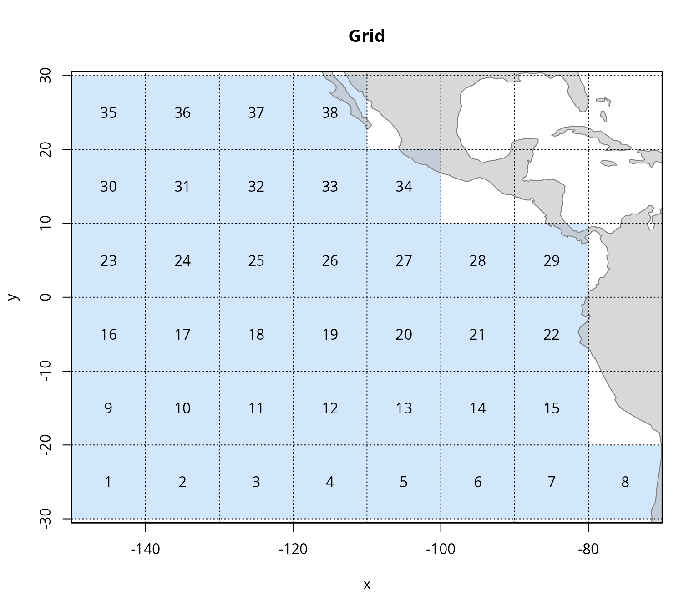
Similarly, cells can be de-selected if negative indices are used:
grid <- create_grid(xrange = c(-150, -70),
yrange = c(-30, 35),
cellsize = 10,
select = -c(16,24,32,38:40,45:48),
crs = 4326,
plot = TRUE,
plot_land = TRUE)
A spatial grid based on tags
Another convenient way to define a spatial grid with
create_grid() is the feed it other admove
objects, such as tagging data or covariate fields. Let’s assume you have
smoe mark-recapture tagging data available, for demonstration we use the
simulated example mark-recapture tags for skipjack tuna in the Eastern
Pacific Ocean included in admove:
head(skjepo$ctags)
#> fish_id date_time species rel_len rel_lon rel_lat date_caught
#> 1 u6hq3n-1 43901.52 111 45.91377 -105.4224 0.3943493 44272.60
#> 2 u6hq3n-10 43901.52 111 47.41883 -105.4224 0.3943493 44017.43
#> 3 u6hq3n-100 43851.60 111 52.86190 -114.3733 -6.5771942 44064.60
#> 4 u6hq3n-101 43851.60 111 45.20155 -114.3733 -6.5771942 44533.34
#> 5 u6hq3n-102 43851.60 111 50.92635 -114.3733 -6.5771942 44407.73
#> 6 u6hq3n-103 43851.60 111 46.54024 -114.3733 -6.5771942 44113.42
#> recap_lon recap_lat
#> 1 -107.6288 -1.0960298
#> 2 -108.7149 -11.9331602
#> 3 -120.7287 0.2138117
#> 4 -121.1731 -7.8260759
#> 5 -103.4598 15.7295759
#> 6 -115.1396 -13.8510942With one line, these tags can be converted into the expected format
by admove, check out
vignette("preparing-tags") for more details on preparing
tagging data:
ctags <- prep_tags(x = skjepo$ctags,
tag_type = "c",
names = c(t0 = "date_time",
x0 = "rel_lon",
y0 = "rel_lat",
t1 = "date_caught",
x1 = "recap_lon",
y1 = "recap_lat"),
date_origin = "1899-12-30",
sref = list(crs = 4326))
head(ctags)
#> t x y id fish_id species rel_len tag_type
#> 1 7.5022514 -105.4224 0.3943493 wl4-1 u6hq3n-1 111 45.91377 c
#> 2 60.5147514 -107.6288 -1.0960298 wl4-1 u6hq3n-1 111 45.91377 c
#> 3 0.3710766 -114.3733 -6.5771942 wl4-10 u6hq3n-107 111 50.60561 c
#> 4 90.7871481 -132.6482 -5.1631626 wl4-10 u6hq3n-107 111 50.60561 c
#> 5 5.6279940 -116.2434 8.8340880 wl4-100 u6hq3n-189 111 46.50313 c
#> 6 43.4663868 -109.1361 11.4681655 wl4-100 u6hq3n-189 111 46.50313 c
#> use
#> 1 1
#> 2 1
#> 3 1
#> 4 1
#> 5 1
#> 6 1Once they are processed, we can just define a default spatial grid based on them:
grid <- create_grid(ctags,
plot = TRUE,
plot_land = TRUE,
auto_layout = FALSE)
## plot tags on top of the spatial grid
plot(ctags, add = TRUE, auto_layout = FALSE)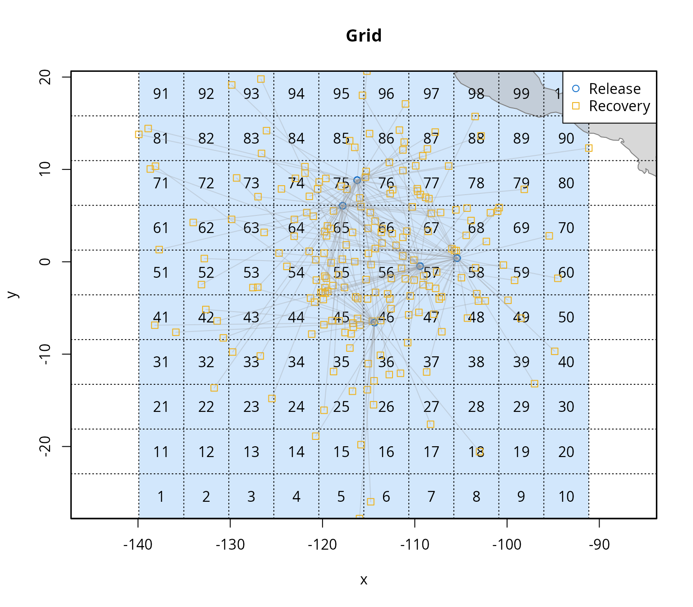
The dimensions of the grid are defined based on the extreme positions in the tagging data. If the cell size is not specified, it is defined to yield 100 grid cells in total.
A spatial grid based on covariate fields
Similarly, a spatial grid can be defined based on available admove covariate fields. Let’s use the covariate fields of the simulated example data for Montagus harrier:
plot(montagus_harrier$cov[,,1,drop=FALSE])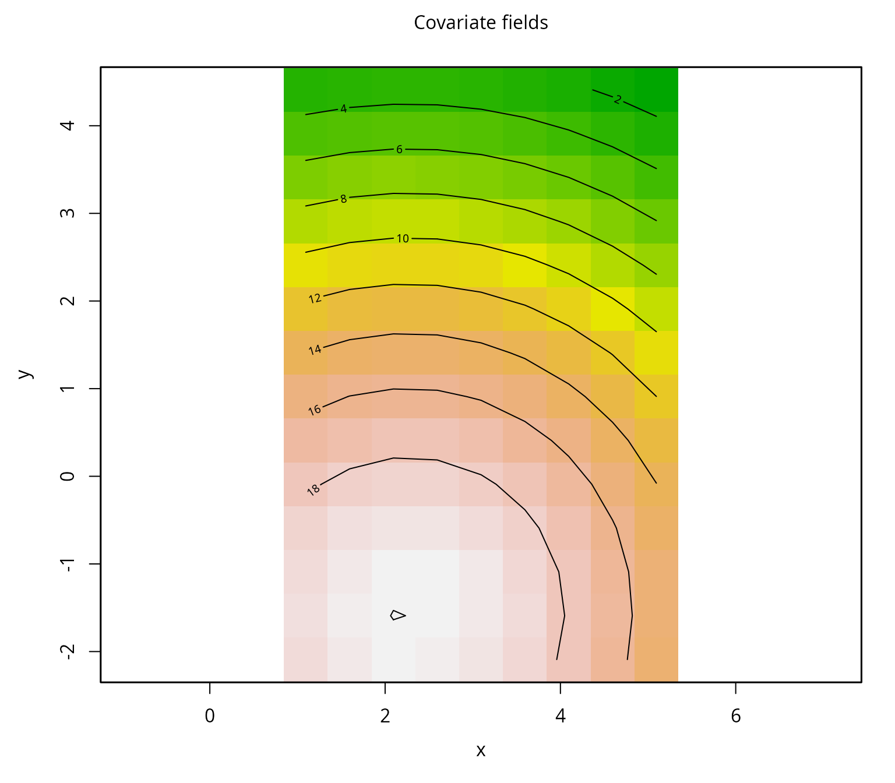
As with the tagging data, we can just pass the covariate fields to
create_grid():
grid <- create_grid(montagus_harrier$cov,
plot = TRUE,
plot_land = TRUE,
auto_layout = FALSE)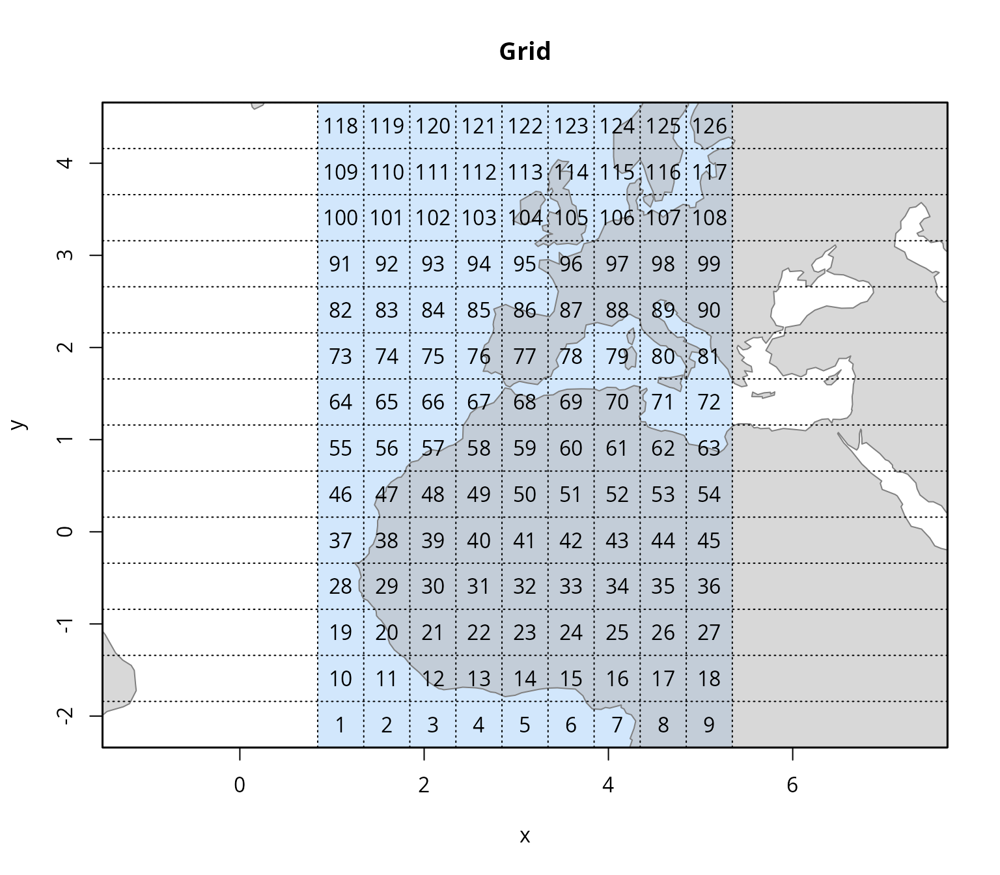
If not specified, the cell size of the covariate field is taken over for covariate fields. But, it would be easy enough to create a coarser cell size:
grid <- create_grid(montagus_harrier$cov,
cellsize = 1,
plot = TRUE,
plot_land = TRUE,
auto_layout = FALSE)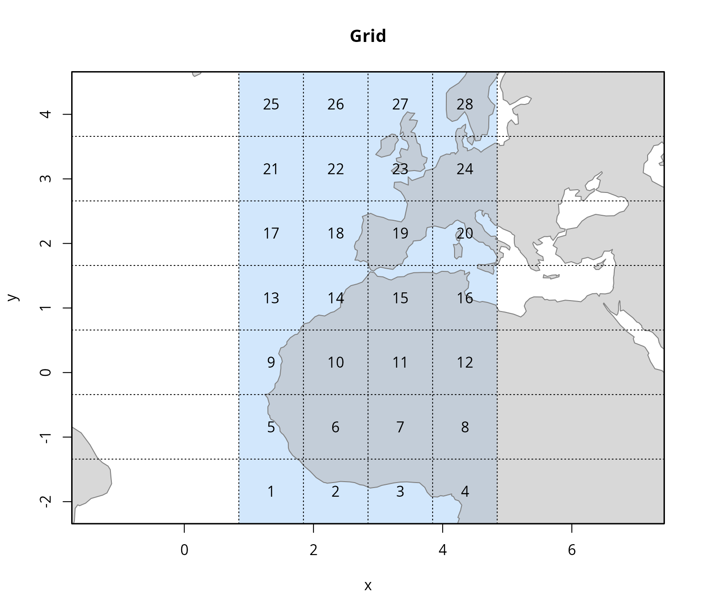
Similarly, to tags and covariate fields, create_grid()
accepts any other admove_* classes, for example lists with
simulated data (admove_sim) as created by
sim_data() or admove’s data list
(admove_data) as created by setup_data().
A spatial grid based on a spatial object
Another useful feature about create_grid() is that it
accepts spatial objects from other packages, such as spatial objects (of
class sf or sfc) from R package
sf Pebesma and Bivand
(2023) or RasterLayer from the R package
raster (Hijmans 2025).
For example we can use part of the world map contained in
admove to create a grid for Lake Eerie in North
America:
## get land from admove's internal data
land <- admove:::.get_land()
## cut to Northeast Atlantic
land_nea <- sf::st_crop(land, sf::st_bbox(
c(xmin = -45, xmax = 35,
ymin = 30, ymax = 80),
crs = sf::st_crs(4326)
))
## dissolve to a single geometry
land_nea <- sf::st_union(sf::st_geometry(land_nea))
## create proper sf object
land_nea <- sf::st_sf(geometry = land_nea, crs = 4326)
## plot the map
plot(sf::st_geometry(land_nea))By default, this selects all grid cells on land:
grid <- create_grid(land_nea)
plot(grid, plot_land = TRUE)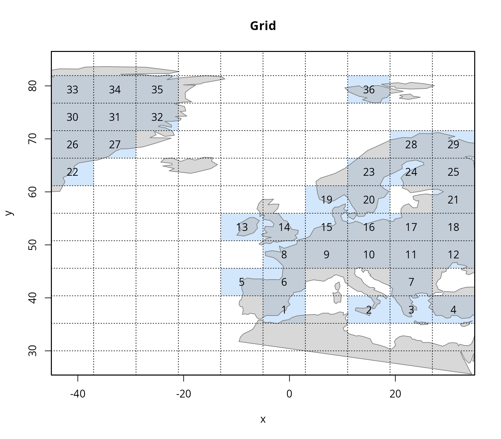
By setting the argument select = -1 we can turn the
default selection around and select every grid cells that is not on
land:
grid <- create_grid(land_nea, select = -1)
plot(grid, plot_land = TRUE)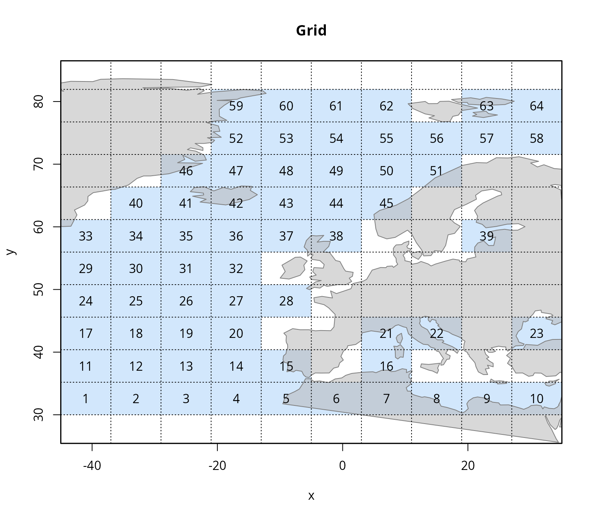
If we are interested with a either starting selection and then
continue choosing cells by selecting or de-selecting, we can set
select 1 or select = 2 with the default or
inverse selection of cells inside polygons, respectively:
grid <- create_grid(land_nea, select = 1)
plot(grid, plot_land = TRUE)